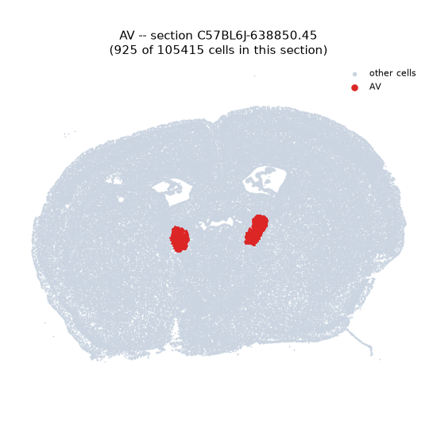
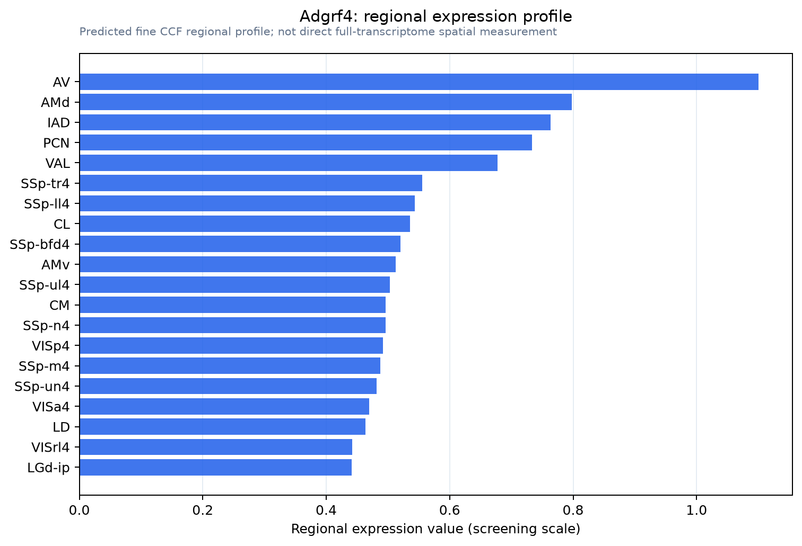

Adgrf4
Adhesion G protein-coupled receptor F4 (G protein-coupled receptor 115)
Spatial tier: REGION_BIASED · Class: GPCR · Top region: AV (Anteroventral nucleus of thalamus) · Positive regions: 33/554
42.7Discovery Score
38.0Targetability Score
CEvidence grade C
What this means: Adgrf4: fine CCF profile is region-biased toward AV (top regions: AV, AMd, IAD, PCN, VAL); this is a discovery lead, not direct proof.
Direct spatial evidence
MERFISH REGION LOCATOR

Regional expression figure

Predicted WMB × fine-CCF profile; not direct full-transcriptome spatial measurement.
Spatial profile
Evidence and specificity
- Evidence status
- PREDICTED_FINE
- Direct sources
- None; predicted localization only
- Exclusive threshold
- 12 positive regions out of 554
- Spatial specificity
- 0.297
- Top-region fraction
- 0.055
- Filter status
- PASS
Interpretation limits
- Cell-type-to-region projection is imputed expression, not direct spatial measurement.
- Adult reference atlases do not establish stability across age, sex, strain, state, or disease.
- Transcript abundance does not guarantee protein abundance or genetic-tool performance.